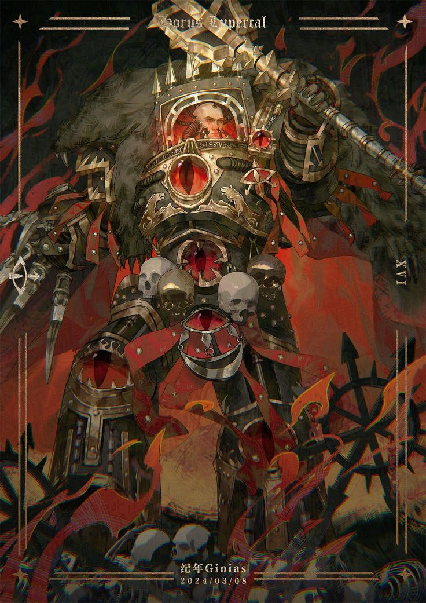
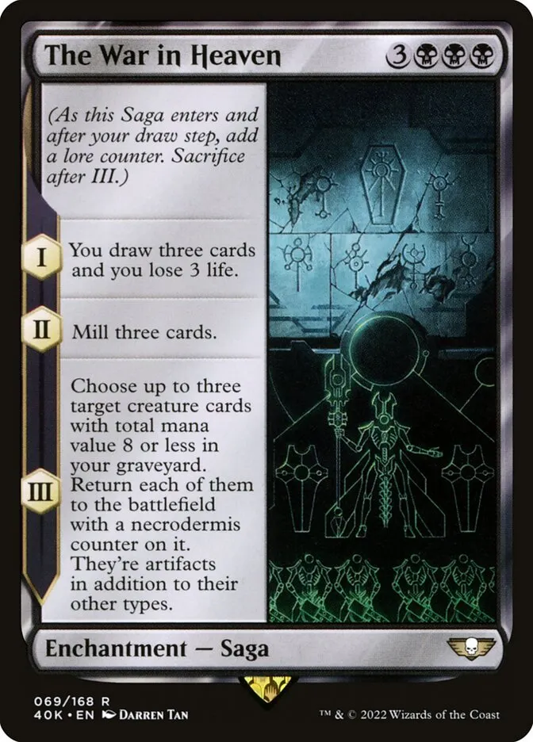
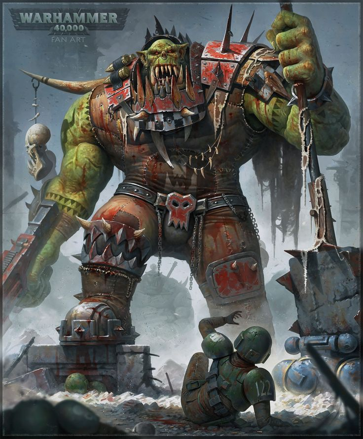
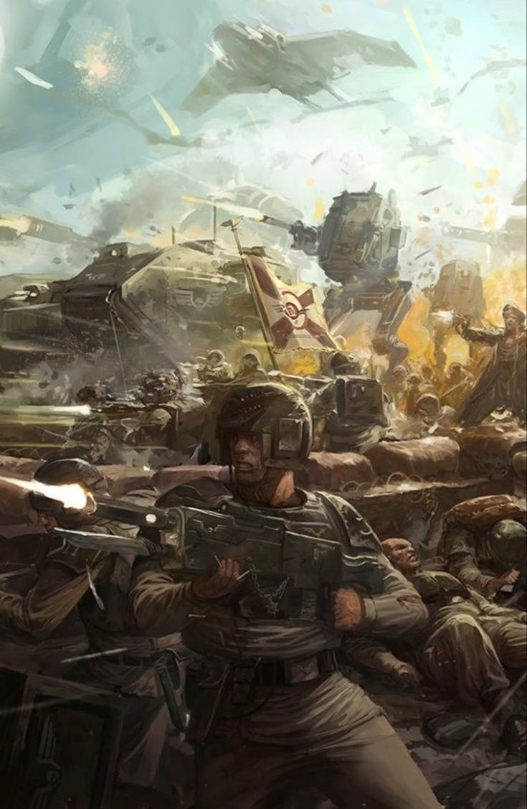
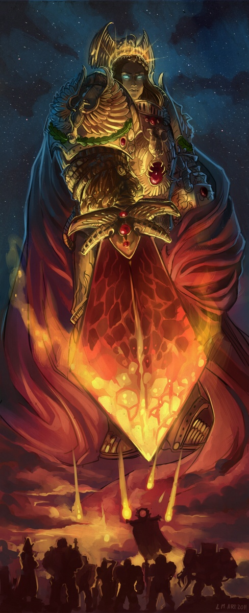

WHAT TO EXPECT:
Dive into the events that shaped the Warhammer universe, take a look into the different types of factions of the grim dark universe, and read about the important characters who lead their factions to victory and changed the course of history.

The Horus Heresy is a galaxy-wide civil war in the Warhammer 40K universe, where Horus, the Emperor's favored son, turns traitor, leading a rebellion against the Imperium. It ends with Horus' death and the Emperor’s near-fatal wounding.

The War in Heaven was an ancient conflict between the Necrontyr (later Necrons) and the Old Ones. The Necrons, seeking immortality, allied with the C'tan, leading to the Old Ones' defeat and the Necrons' rise as a powerful force.

The Orks are a brutal and warlike race in the Warhammer 40K universe, known for their green skin, crude technology, and love of fighting.

The Imperium of Man is a vast empire in the Warhammer 40K universe, ruled by the God-Emperor and characterized by its authoritarian regime and constant warfare.

The Emperor of Mankind is an immortal, god-like ruler who united humanity during the Great Crusade. Mortally wounded during the Horus Heresy, he now resides in the Golden Throne, guiding the Imperium from afar.
War Master Horus, once the Emperor’s favored Primarch, led the **Horus Heresy** after falling to Chaos. He was slain by the Emperor, but his rebellion nearly shattered the Imperium.